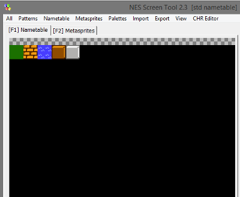
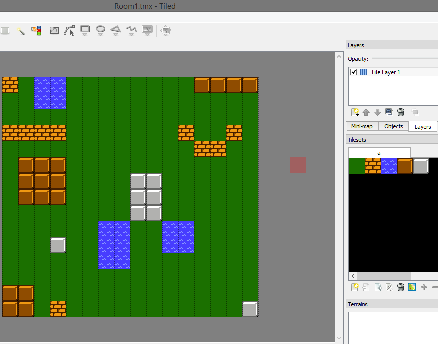
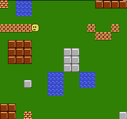
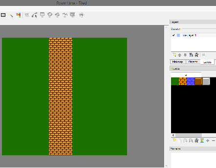
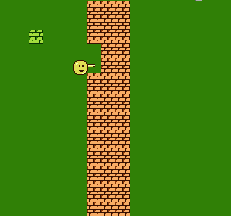

11、Metatiles
什么是metatile，对于贴图来说这是个特殊的词。在我的工程里有2x2的贴图，这么用的原因是为了压缩，简化背景图的制作。背景调色板（属性表）不能修改单个的图块，最小修改的是2x2的图块。
这样的代码不会将整个屏幕按照32x30对待（960字节），而是按照16x15（240个字节）的数组对待。我们只需要用x的4个bits和y的4个bits跟碰撞数组来计算碰撞。
index = (y & 0xf0) + (x >> 4);
更进一步的操作是，可以用一个2倍的数组来绘制碰撞背景图。我使用了一个系统，可以让我使用Tiled Map Editor绘制关卡，背景图的块是16x15。
我们需要跳过一些限制来实现这个想法。游戏需要的是2bpp的CHR文件。我们可以在平铺的编辑器中制作图形，我建议使用YY CHR编辑器。然后将图形导入NES Screen Tool。然后制作一些16×16块（2个贴图×2个贴图），这个尺寸刚好是属性表的大小，重要的是可以为每一个块选择一个调色板。如果有2个不同颜色的块，我就会使用2个metatiles （看最后的2个metatiles,图块相同，但是调色板不同）

从左上角开始制作metatile块，我的系统只能支持51个metatile。每个metatile需要5个byte字节，设置一个256byte字节以下的数据集，51x5=255.
NES Screen Tool无法保存图片，所以我使用屏幕截图，然后用GIMP剪切图片存成metatiles.png，导入Tiled Map中使用（Tiled需要使用32x32的尺寸作为一个块处理）
保存带有属性的nametable，未压缩的二进制文件.nam，使用我的meta.py脚本将其转换为 a c 数组。meta.py会将第一个0,0,0,0 metatile当做数据的结束。下面是输出内容
const unsigned char metatiles [] = {
2,2,2,3,3，
4,4,4,4,1，
9,9,9,9,2，
5,6,8,7,1，
5,6,8,7,0
};
每个metatile需要 5 bytes = 贴图使用4 bytes + 调色板 1 byte，我将这个代码放到数组中。
现在使用 Tiled 工具，制作我的关卡。这个软件在做地图方面是个很好的工具，我们将metatiles.png作为tileset导入工具中，然后制作我们的地图。

提高一点，将上面的地图保存导出csv，然后将其转换为 a c 数组，使用csv2c.py脚本执行这步骤，将csv文件转为C数据 Room.c 然后导入游戏。
我们有了metatile数据，而且有了地图，后面是 metatile 怎么运行的问题
我们的metatile系统是扩展vram缓存，他在屏幕显示以后开始运行，下面的示例中，他会在屏幕关闭的时候写入。我们不是等待nmi把数据推送到PPU中运行，而是通过flush_vram_update_nmi() 将vram缓冲区推送到ppu来加快速度。这与某些neslib中的flush_vram_update() 函数相同，但不需要指针作为参数。
我设置了一个指向vram缓冲区的指针，set_vram_buffer()，我们需要设置一个指针指向metatile，set_mt_pointer(metatiles1)，并设置指向地图的指针set_data_pointer(Room1)，我们可以使用metatile函数了。
我做了两个函数将metatiles放入缓冲区。
buffer_1_mt(address, metatile); //放入1个metatile，不修改调色板。（不需要指向到地图数据的指针）
buffer_4_mt(address, index); //放入4个metatiles （2×2图块），并设置调色板。他能找到4个块，并逐个把他们放到 vram缓存中。逐个获取调色板，然后把他们放到1个byte的属性字段中。然后把他们拼一起放到缓存中。
ROOM关卡程序执行一个循环，每32x32像素转换为一个metatile，并显示到屏幕上。
for(y=0; ;y+=0x20){
for(x=0; ;x+=0x20){
clear_vram_buffer(); // do each frame, and before putting anything in the buffer
address = get_ppu_addr(0, x, y);
index = (y & 0xf0) + (x >> 4);
buffer_4_mt(address, index); // ppu_address, index to the data
flush_vram_update_nmi();
if (x == 0xe0) break;
}
if (y == 0xe0) break;
}
每次循环都清除缓存是非常重要的事儿。然后立即推送到PPU中，但是需要关闭屏幕。
许多跟移动相关的代码有点抓狂。我将碰撞设置13x13而不是15x15，然后将精灵的位置向左上各移动1个像素。我借用了另一个项目的碰撞代码，可以让帧速大于1像素，这样比想象的更复杂了些。
我们仍需要c_map中判断碰撞，所有非0的metatile都能碰撞（这英文我实在是翻译不下去了。。。）
游戏是下面的样子，碰撞效果很好。

https://github.com/nesdoug/13_Metatiles/blob/master/metatiles.c
https://github.com/nesdoug/13_Metatiles
我又做了另一个，因为我想测试 buffer_1_mt() 是如何工作的。他与前面的代码有些相似，我将主背景色改为绿色来让他变成我想要的效果。
buffer_1_mt() 用于游戏中改变metatile，这样不会影响调色板。改变只有一个metatiles的调色板需要修改属性表里1个byte种的2个bits，这个操作非常麻烦。
buffer_1_mt() 需要你打开vram系统，set_vram_buffer()，并且需要你为metatile设置一个指针，你需要给他个地址，然后告诉他要在哪里显示metatile。
下面是关卡的截图。

我用buffer_1_mt() 在左上角添加1个以上的metatile
buffer_1_mt(NTADR_A(4,4),1);
右边的参数（1）意思是放置＃1 metatile（砖块），左上方的瓷砖从左边的第4个瓷砖开始，从顶部的第4个瓷砖开始。
注意调色板是有问题的，buffer_1_mt() 不会修改属性字节。如果你能知道要发送的bit数据就能解决这个问题。如果你进入方法把注释部分去掉就能给图块正确的上色了。
address = get_at_addr(0, 32, 32); // tile 4,4 = pixels 32,32
one_vram_buffer(0x01,address); // 左上角 = 调色板 1

我给小家伙了一根棍子，当你按了A或B的时候就向右戳。当棍子出来的时候就会检测碰撞，然后使用one_vram_buffer()将其替换为空白块（将碰撞地图改为0，这样你就可以通过这个地方了）
void break_wall(void){
temp1 = BoxGuy1.x + 0x16;
temp2 = BoxGuy1.y + 5;
coordinates = (temp1>>4) + (temp2 & 0xf0);
if(c_map[coordinates] == 1){ // if brick
c_map[coordinates] = 0; // 可以穿过
address = get_ppu_addr(0, temp1, temp2);
buffer_1_mt(address, 0); // 将 metatile #0 = blank 变成空白
}
}
这个功能有点复杂，但是代码却很简单。
https://github.com/nesdoug/14_Metatiles2/blob/master/metatiles2.c
https://github.com/nesdoug/14_Metatiles2
我们可以制作非常简单的非滚动屏幕的游戏，只需要你为每个房间制作地图，并在走到屏幕边缘的时候装载新地图，而且很多游戏都是这样做的。
但我还是想做能滚屏的游戏，下一节我们要使用滚动了。